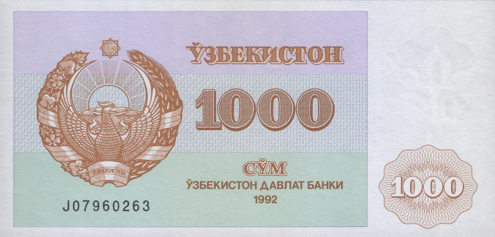

1996-yilgi valyuta inqirozi va soʻm konvertatsiyasining cheklanishi (1996–2003)
1994-yilda soʻm joriy etilgach, 1996-yilda paxta hosilining pastligi va zaxiralarning kamayishi toʻlov balansi inqirozini keltirib chiqardi. Shu yili Oʻzbekiston valyuta ayirboshlashni chekladi, soʻm konvertatsiyasini toʻxtatdi va XVF dasturi uzildi. Natijada koʻp yillik koʻp kursli tizim va rasmiy hamda qora bozor kurslari oʻrtasida katta tafovut vujudga keldi. Oʻzbekiston faqat 2003-yil 15-oktabrda XVFning VIII moddasi majburiyatlarini — joriy hisob boʻyicha konvertatsiyani — qabul qildi. Ushbu tarixiy maʼlumotnoma faqat faktlar asosida.

Mustaqil Oʻzbekiston iqtisodiy tarixidagi eng uzoq davom etgan muammolardan biri — soʻmning erkin ayirboshlanmasligi — 1996-yilda boshlandi va deyarli yetti yil davom etdi. Quyida bu valyuta inqirozi va konvertatsiya cheklovlari faqat tasdiqlangan faktlar asosida bayon etiladi; manbalar orasida farq boʻlgan yoki aniqlab boʻlmagan oʻrinlar alohida belgilab oʻtiladi.
Soʻmning joriy etilishi
Oʻzbekiston 1993-yil noyabrida oʻtish davri uchun «soʻm-kupon»ni, 1994-yil 1-iyulda esa toʻliq soʻmni joriy etdi — 1 soʻm 1 000 soʻm-kuponga tenglashtirildi, boshlangʻich kurs taxminan 25 soʻm = 1 AQSh dollari edi. Mamlakat «shok terapiya»dan koʻra narx va savdoni asta-sekin ozod qiladigan, davlat nazoratini kuchli saqlaydigan bosqichma-bosqich (gradualist) islohot yoʻlini tanlagan edi.
1996-yil: paxta zarbasi va toʻlov balansi inqirozi
Paxta Oʻzbekistonning asosiy eksport va valyuta manbasi edi — chet el valyutasi tushumining taxminan 40 foizini bergan. 1996-yilda hosilning pastligi va qattiq valyuta zaxiralarining kamligi toʻlov balansi inqirozini keltirib chiqardi. (Manbalar 1996-yilning oʻzida jahon paxta narxi keskin tushgani borasida bir xil emas; 1996-yil uchun ishonchli omil — hosilning kamligi va zaxiralarning yetishmasligi, jahon narxining pasayishi esa koʻproq 1997–1999-yillarga tegishli.)

Siyosat javobi: konvertatsiya cheklovlari
1996-yilning oxirida Oʻzbekiston oldingi liberallashtirishni orqaga qaytardi: importni va valyuta sotib olishni cheklovchi choralar, konvertatsiya cheklovlari, valyuta tushumini davlatga majburiy topshirish (surrender) talablari va import nazoratini joriy qildi — bu soʻm ustidan davlat nazoratini kuchaytirdi. Shu davrda XVF bilan hamkorlik uzildi: standby dasturi, ikkilamchi manbalarga koʻra, 1996-yil oktabrida — asosan aynan konvertatsiya cheklovlari sababli — toʻxtatildi va XVF kreditlashni toʻxtatdi.
Koʻp kursli tizim va qora bozor
Koʻp kursli rejim amalda 1996-yil sentabrida boshlandi. Hukumat ikki rasmiy (haddan tashqari kuchaytirilgan) kursni — Markaziy bankning rasmiy kursi va davlat korxonalari hamda litsenziyalangan importchilar uchun «imtiyozli» banklararo kursni — hamda ancha zaif qora bozor kursini yonma-yon ushladi. Baʼzi paytlarda qora bozor kursi rasmiy kursdan taxminan 4 barobar yuqori boʻlgan. 2000-yil may oyidagi devalvatsiyadan keyin, masalan, rasmiy kurs ~280 soʻm/dollar boʻlsa, tijorat kursi ~675 soʻm/dollar atrofida edi. (Aniq raqamlar sanaga va qaysi «rasmiy» kurs olingani — Markaziy bank yoki banklararo — ga qarab oʻzgaradi.)
Oqibatlari
Konvertatsiyaning boʻgʻilishi va qattiq valyutaning ulanishga yaqin firmalar foydasiga, shaffof boʻlmagan tartibda taqsimlanishi importchilar, chet el investorlari va oddiy savdogarlarga zarar yetkazdi; «chelnok» (moki) savdosi va norasmiy iqtisodiyotni hamda gullab-yashnagan valyuta qora bozorini kuchaytirdi; soʻm qadrsizlandi. Ayni paytda Oʻzbekiston gradualist, davlat nazoratidagi yoʻl evaziga koʻplab postsovet davlatlari boshidan kechirgan keskin ishlab chiqarish qulashidan qochdi — bu iqtisodchilarning odatiy bahosidir.
2003-yil: XVFning VIII moddasi
Oʻzbekiston XVFning VIII moddasi (2(a), 3 va 4-boʻlimlar) majburiyatlarini 2003-yil 15-oktabrdan kuchga kiradigan qilib qabul qildi — bu bilan soʻm joriy hisob (current account) operatsiyalari boʻyicha konvertatsiya qilinadigan boʻldi (XVFning rasmiy eʼloni 2003-yil 11-noyabr sanasiga ega). VIII modda aʼzo davlatlardan xalqaro joriy operatsiyalar boʻyicha toʻlov va oʻtkazmalarga cheklov qoʻymaslikni va XVF ruxsatisiz kamsituvchi valyuta kelishuvlari yoki koʻp kursli amaliyot yuritmaslikni talab qiladi. U joriy hisob konvertatsiyasini qamrab oladi — kapital oʻtkazmalarini (masalan, chet el aksiyalarini sotib olish) emas.
Uzoq muddatli meros
2003-yil joriy hisob boʻyicha konvertatsiyani tikladi, biroq kapital cheklovlari saqlanib qoldi va amalda tafovut yillar davomida davom etdi. Soʻmni toʻliq liberallashtirish va erkin suzish rejimiga oʻtkazish ancha keyin — 2017-yil sentabrida prezident Shavkat Mirziyoyev davrida yuz berdi: Markaziy bank 2017-yil 5-sentabrdan kurslarni birlashtirib, soʻmni erkin suzishga qoʻydi; rasmiy kurs ~4 200 soʻmdan ~8 100 soʻm/dollarga koʻtarilib, qora bozor kursiga yaqinlashdi (taxminan 50 foizlik devalvatsiya). Ushbu maʼlumotnoma faqat tasdiqlangan sanalar va faktlarni keltiradi.

Manbalar
- IMF — 'The Republic of Uzbekistan Accepts Article VIII Obligations' (press release dated 11 Nov 2003)
- RFE/RL — Uzbekistan accepts Article VIII with effect from 15 October 2003 (current-account convertibility)
- Jamestown Foundation — Uzbekistan Stumbles Closer to Convertibility (cotton ~40% of forex; 1996 restrictions; IMF standby suspended Oct 1996)
- Eurasian Research Institute — Currency devaluation in Uzbekistan (multiple-rate system from Sept 1996; black market ~4x official; 2000 devaluation; 2017 unification)
- Wikipedia — Uzbekistani sum (som-coupon Nov 1993; full som 1 July 1994 at 1 som = 1,000 coupons)
- RFE/RL — Uzbekistan liberalizes currency / lets som float, September 2017 (rate ~4,200 to ~8,100 som/$)